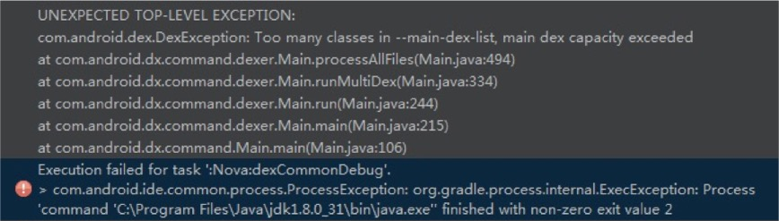

当Field邂逅65535
来源:Jason's Blog
很多Android开发者都知道，同一个dex中方法数不能超过65535。为什么呢？来看一下这篇文章，有3万的阅读量啊，当年一定风靡一时，作者说65535是dexopt引起的，我特马真是呵呵了，写文章不动脑子，dexopt都到了什么阶段了？再来看这篇文章，解释和上面如出一辙，可以看到前面那篇文章流毒不浅啊，关键这哥们貌似最近还出了本书，这种狗屁态度还好意思出书？
『天下熙熙，皆为利来；天下攘攘，皆为利往。』大家写文章，为名为利无可厚非，有错误都是有情可原，但关键是要有点认真的态度啊。当年写构建神器Gradle花了好几天的时间，投稿后又修改到深夜，依然还是有些错误，后来也在自己的博客上做了勘误更新。我看扔物线那篇RxJava的文章都有内测读者群，想来也是极为认真，非常尊敬这种态度，非常喜欢这样的开发者。
Field 65K
言归正传，来聊聊为什么方法数不能超过65535？搬上Dalvik工程师在SF上的回答，因为在Dalvik指令集里，调用方法的invoke-kind指令中，method reference index只给了16bits，最多能调用65535个方法，所以在生成dex文件的过程中，当方法数超过65535就会报错。细看指令集，除了method，field和class的index也是16bits，所以也存在65535的问题。一般来说，method的数目会比field和class多，所以method数会首先遇到65535问题，你可能都没机会见到field过65535的情况。
幸运的我见到了，呵呵。

明明显示的是DexException: Too many classes in --main-dex-list，和field有毛关系？你可能想问我脑子是不是进水了，唉，明明是Google工程师脑子有问题，你看看Google自家兄弟提的issue就知道了。在使用multidex的情况下，主dex不管method还是field数目超了65535都会报Too many classes的错误，不使用multidex，就报正常的错误了，呵呵。
你可能要纳闷了，我为啥会遇到field超65535的问题？看看我”新大美”同事写的，哈哈：
实际应用中我们还遇到另外一个比较棘手的问题， 就是Field的过多的问题，Field过多是由我们目前采用的代码组织结构引入的，我们为了方便多业务线、多团队并发协作的情况下开发，我们采用的aar的方式进行开发，并同时在aar依赖链的最底层引入了一个通用业务aar，而这个通用业务aar中包含了很多资源，而ADT14以及更高的版本中对Library资源处理时，Library的R资源不再是static final的了，详情请查看google官方说明，这样在最终打包时Library中的R没法做到内联，这样带来了R field过多的情况。
差不多的情况，我们上层十几个业务线为独立module，都依赖base，而base的资源id有个三四千，上层R文件会把下层的R文件合并过来，使用multidex后，会把manifest里的activity、service等和其直接引用类加到main dex中，所以很多R文件涌入，field超个65535那都不叫事。
修改R
field这么多怎么办呢？我们大胆假设只保留最顶层的R文件，因为这个R文件会把下层R文件合并过来，所有的R引用都可以指向这个文件。下层的类要引用最上层的R文件，下层不可能依赖上层，所以修改源代码肯定是走不通的，那就改class文件字节码吧。遍历class文件，把R的引用都指向最上层，把其他没用的R文件删掉。
问题
思路有了，接下来的操作有以下问题：
- 什么时候修改？
dex过程是把全部class文件转换成dex文件，所以class字节码的修改要在dex之前，我们决定介入构建流程，在dex之前添加一个gradle任务，用来修改字节码。
- 用什么修改？
可以使用asm这个库，由于android gradle间接依赖asm，所以我们可以在build.gradle中直接import相关类。
- 修改什么？
当然是修改class文件，那么class文件的路径在哪里？主工程的build/intermediates/exploded-aar中包含了库工程aar解压后的内容，有很多jar文件，这些jar文件太过分散不好操作，由于我们使用了multidex，看一下dex任务的输入，发现是主工程的build/intermediates/multi-dex/common/debug/allclasses.jar文件，顾名思义，这个文件包含了所有的class文件，我们直接修改这个jar包里的class文件就可以了。
代码
将下面这段代码放在主工程的build.gradle就不报错了。在我们的代码中，unifyRImport任务能跑个10秒钟左右，说长不长，说短不短。
import org.apache.commons.compress.utils.IOUtils
import org.objectweb.asm.*
import java.util.jar.JarEntry
import java.util.jar.JarFile
import java.util.jar.JarOutputStream
import java.util.zip.ZipEntry
ext {
dpPackagePrefix = 'com/dianping/'
libDrawableClass = 'com/dianping/nova/R\$drawable.class'
}
byte[] unifyR(InputStream inputStream, String rootPackagePrefix) {
ClassReader cr = new ClassReader(inputStream);
ClassWriter cw = new ClassWriter(cr, 0);
ClassVisitor cv = new ClassVisitor(Opcodes.ASM4, cw) {
@Override
public MethodVisitor visitMethod(int access, String name, String desc,
String signature, String[] exceptions) {
MethodVisitor mv = cv.visitMethod(access, name, desc, signature, exceptions);
mv = new MethodVisitor(Opcodes.ASM4, mv) {
@Override
void visitFieldInsn(int opcode, String owner, String fName, String fDesc) {
if (owner.contains(dpPackagePrefix) && owner.contains("R\$") && !owner.contains(rootPackagePrefix)) {
super.visitFieldInsn(opcode, rootPackagePrefix + "R\$" + owner.substring(owner.indexOf("R\$") + 2), fName, fDesc);
} else {
super.visitFieldInsn(opcode, owner, fName, fDesc);
}
}
}
return mv;
}
};
cr.accept(cv, 0);
return cw.toByteArray();
}
afterEvaluate {
def manifestFile = android.sourceSets.main.manifest.srcFile
def packageName = new XmlParser().parse(manifestFile).attribute('package')
def rootPackagePrefix = packageName.replace('.', '/') + '/'
println packageName
android.applicationVariants.each { variant ->
def dx = tasks.findByName("dex${variant.name.capitalize()}")
def unifyRImport = "unifyRImport${variant.name.capitalize()}"
task(unifyRImport) << {
Set<File> inputFiles = dx.inputs.files.files
inputFiles.each {
if (it.name.endsWith(".jar")) {
println it
JarFile jarFile = new JarFile(it);
Enumeration enumeration = jarFile.entries();
File tmpFile = new File(it.getParent() + File.separator + "classes.jar.tmp");
JarOutputStream jarOutputStream = new JarOutputStream(new FileOutputStream(tmpFile));
while (enumeration.hasMoreElements()) {
JarEntry jarEntry = (JarEntry) enumeration.nextElement();
String entryName = jarEntry.getName();
ZipEntry zipEntry = new ZipEntry(entryName);
InputStream inputStream = jarFile.getInputStream(jarEntry);
if (entryName.startsWith(dpPackagePrefix) && entryName.endsWith(".class")) {
if (!entryName.contains("R\$")) {
jarOutputStream.putNextEntry(zipEntry);
jarOutputStream.write(unifyR(inputStream, rootPackagePrefix));
} else {
//NovaLib中R$drawable有被反射使用，不删除
if (entryName.startsWith(rootPackagePrefix) || entryName.equals(libDrawableClass)) {
jarOutputStream.putNextEntry(zipEntry);
jarOutputStream.write(IOUtils.toByteArray(inputStream));
}
}
} else {
jarOutputStream.putNextEntry(zipEntry);
jarOutputStream.write(IOUtils.toByteArray(inputStream));
}
jarOutputStream.closeEntry();
}
jarOutputStream.close();
jarFile.close();
tmpFile.renameTo(it);
}
}
}
tasks.findByName(unifyRImport).dependsOn dx.taskDependencies.getDependencies(dx)
dx.dependsOn tasks.findByName(unifyRImport)
}
}
坑
我一般不喜欢用坑这个词，感觉遇到坑更多是因为无知，但特马这的确是个坑，在mac上跑的好好的，windows跑不通了，还是报class太多的错误。我一想两个系统文件分隔符不同，不会是路径上出了问题吧，最后竟然发现是tmpFile.renameTo(it);这行命令没有重命名成功，Google一搜发现遇到这坑的不在少数，a重命名成b，如果b已经存在，mac的做法直接覆盖，windows就会重命名失败。所以最后在rename前面加了一句，it.delete();。
dex任务增量
代码欢乐的跑了几天，有哥们提意见了，什么代码就不改，为什么点击run还要跑一两分钟？在这段时间的背后AS背地里做了什么？数百头母驴为何半夜惨叫？小卖部安全套为何屡遭黑手？女生宿舍内裤为何频频失窃？连环强奸母猪案，究竟是何人所为？老尼姑的门夜夜被敲，究竟是人是鬼？数百只小母狗意外身亡的背后又隐藏着什么？这一切的背后， 是人性的扭曲还是道德的沦丧？是性的爆发还是饥渴的无奈？唉，真是崇拜爱哥。
我们可以在AS中看到dex任务又重新跑了一遍，主要时间就花在这上面了。之前的博客讲过，任务增量构建要求输入和输出较上次没有区别，dex重新跑说明输入或者输出有变化，输出是多个dex文件我们没有改动，输入allclasses.jar虽然有更改，但因为源码不变，第二次运行allclasses.jar应该和上次一样的，不应该重新跑啊。比较了两次运行的allclasses.jar的md值，发现还真是不一样啊，看来问题就出在这里了。
zip哈希
关键是为什么前后两次运行allclasses.jar的哈希值不同呢？
话说之前向maven上打包上传aar的时候，发现代码资源都不改动，上传上去的aar哈希值竟然不同，为什么呢？一个简单的a.txt前后zip压缩两次，得到的zip文件哈希值也不同，用beyond compare看了下二进制，还真的不一样。那就去看看zip算法)吧，可以看到header中有时间戳相关的东西，应该就是这导致同样的文件zip压缩后哈希值不同。
jar打包也是用的zip算法，因为第一次运行我们修改了allclasses.jar，导致第二次运行时，某个任务的输出发生了变化，所以会重新运行生成allclasses.jar，前后两次的allclasses.jar哈希值就发生了变化，dex任务就要重新跑了。
增量思路
之前的问题，主要还是没有把allclasses.jar及时还原。因为allclasses.jar是dex的输入，所以我们需要在dex之后把allclasses.jar还原，既然需要还原，那就需要在修改allclasses.jar的时候有个备份（classes.bak）。还有个问题，每次unifyRImport任务运行时，都要重新去生成精简后的allclasses.jar，这一步可以加上缓存，根据allclasses.jar的md5值命名缓存文件（.jar.opt），如果有缓存直接复制成allclasses.jar就可以了。
代码
Talk is cheap. Show me the code.
afterEvaluate {
def manifestFile = android.sourceSets.main.manifest.srcFile
def packageName = new XmlParser().parse(manifestFile).attribute('package')
def rootPackagePrefix = packageName.replace('.', '/') + '/'
android.applicationVariants.each { variant ->
def dx = tasks.findByName("dex${variant.name.capitalize()}")
Set<File> inputFiles = dx.inputs.files.files
def allClassesJar;
inputFiles.each {
if (it.name.endsWith(".jar")) {
allClassesJar = it;
}
}
if (allClassesJar != null) {
def unifyRImport = "unifyRImport${variant.name.capitalize()}"
def bakJar = new File(allClassesJar.getParent(), allClassesJar.name + ".bak")
task(unifyRImport) << {
File unifyRJar = new File(allClassesJar.getParent(), "${md5(allClassesJar)}.jar.opt")
if (!unifyRJar.exists()) {
allClassesJar.getParentFile().eachFile { file ->
if (file.name.endsWith(".jar.opt")) {
file.delete()
}
}
JarFile jarFile = new JarFile(allClassesJar);
Enumeration enumeration = jarFile.entries();
JarOutputStream jarOutputStream = new JarOutputStream(new FileOutputStream(unifyRJar));
while (enumeration.hasMoreElements()) {
JarEntry jarEntry = (JarEntry) enumeration.nextElement();
String entryName = jarEntry.getName();
ZipEntry zipEntry = new ZipEntry(entryName);
InputStream inputStream = jarFile.getInputStream(jarEntry);
if (entryName.startsWith(dpPackagePrefix) && entryName.endsWith(".class")) {
if (!entryName.contains("R\$")) {
jarOutputStream.putNextEntry(zipEntry);
jarOutputStream.write(unifyR(inputStream, rootPackagePrefix));
} else {
//NovaLib中R$drawable有被反射使用，不删除
if (entryName.startsWith(rootPackagePrefix) || entryName.equals(libDrawableClass)) {
jarOutputStream.putNextEntry(zipEntry);
jarOutputStream.write(IOUtils.toByteArray(inputStream));
}
}
} else {
jarOutputStream.putNextEntry(zipEntry);
jarOutputStream.write(IOUtils.toByteArray(inputStream));
}
jarOutputStream.closeEntry();
}
jarOutputStream.close();
jarFile.close();
}
if (bakJar.exists()) {
bakJar.delete()
}
allClassesJar.renameTo(bakJar)
copyFileUsingStream(unifyRJar, allClassesJar)
}
tasks[unifyRImport].dependsOn dx.taskDependencies.getDependencies(dx)
dx.dependsOn tasks[unifyRImport]
//还原allclasses.jar
def assemble = tasks.findByName("assemble${variant.name.capitalize()}")
def restoreClassesJar = "restore${variant.name.capitalize()}"
task(restoreClassesJar) << {
if (bakJar.exists()) {
allClassesJar.delete()
bakJar.renameTo(allClassesJar)
}
}
tasks[restoreClassesJar].dependsOn dx
assemble.dependsOn tasks[restoreClassesJar]
}
}
}
这次主要修改了afterEvaluate里面的东西，然后新加了自定义的md5和copyFileUsingStream方法，groovy都有些脚本的特性了，获取md5和复制文件还要自己撸，我也是醉了。
dex增量
至此，Field 65535的问题基本上算是完美解决了。但是你会发现改了一行代码，build的时间还是很久，主要耗时的任务就是dex，这个怎么搞？
两种方案，Buck和LayoutCast。Buck是facebook出品的，微信很早就用上了，但有很多规则，侵入性较强，代码改动大。 LayoutCast是我司屠大师研发的，对项目改动非常小，应该也有借鉴buck的一些思路。
稍微看了一下buck的思路，buck的dex粒度非常小，每个module都会打成一个dex，最后合并成一个大的dex，修改代码后，只需要重新生成代码所在的dex，然后通过adb传递到手机，动态替换该dex即可，都不需要重新生成apk，也节省了安装的时间。